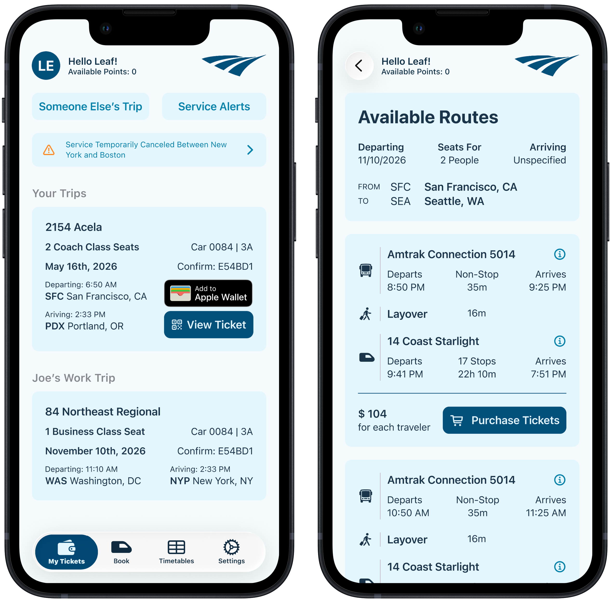
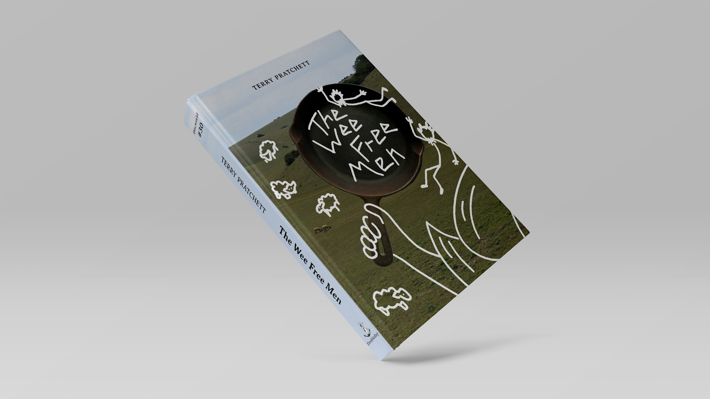
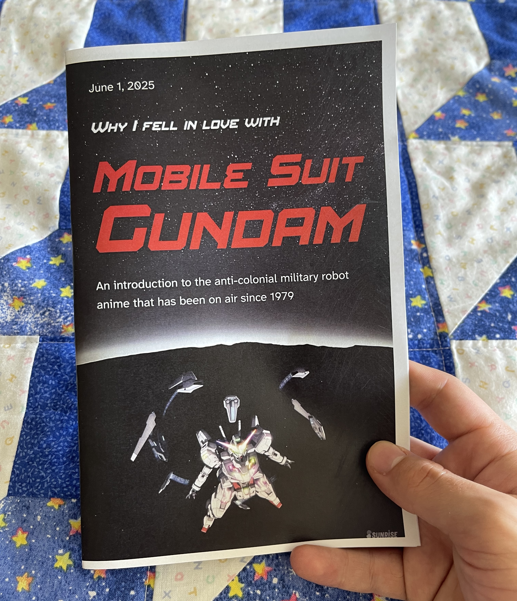
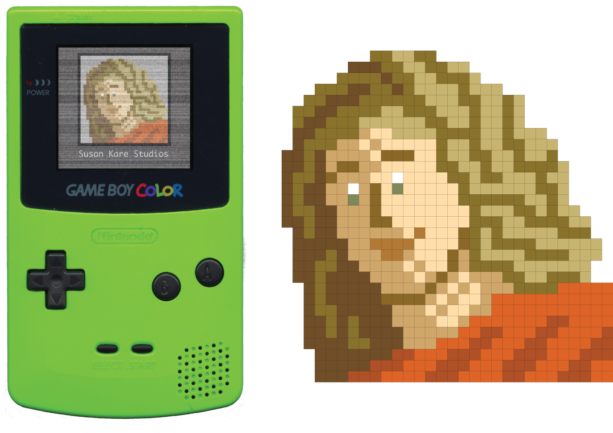
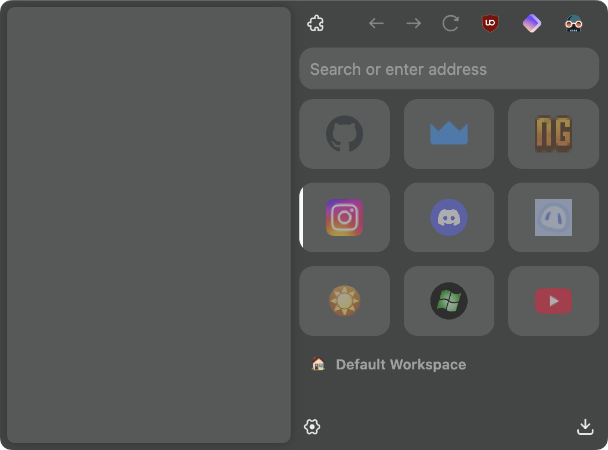
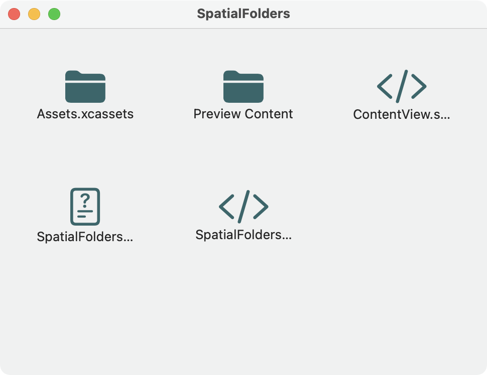
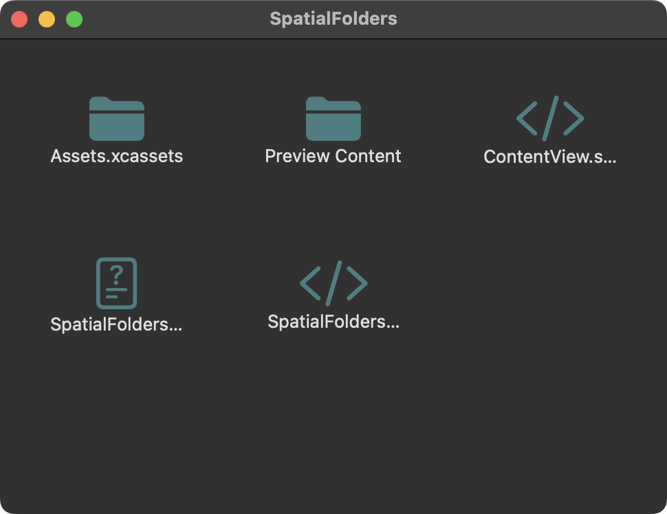
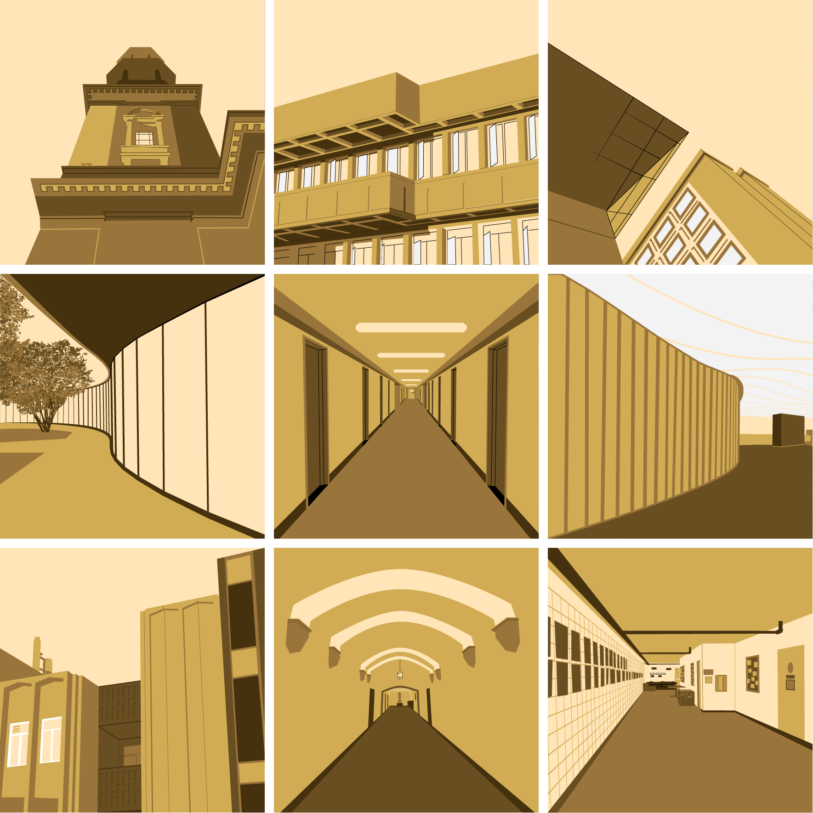
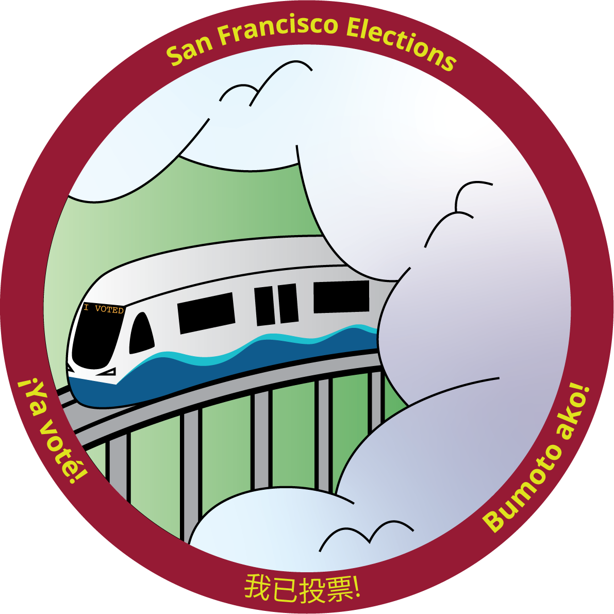

Amtrak App UX Redesign
Figma | March 23rd, 2026
A restructuring of the ticket purchasing and viewing flows in Amtrak’s mobile app, focused on accelerating and streamlining linear tasks, and improving the organization of the app to improve retention.

Book Cover Project
Adobe InDesign | December 10th, 2025
Book Cover for the Wee Free Men

Presidio Pet Cemetery Booklet
Adobe InDesign | November 18th, 2025

Gundam Fanzine
Adobe InDesign | June 1st, 2025
A 16-page fanzine about Mobile Suit Gundam, the anti-colonial military robot anime that has been on air since 1979.

Pixel Portrait of Susan Kare
Adobe Illustrator | April 2nd, 2025
A pixel art portrait of Susan Kare, inspired by her graph paper portrait of Steve Jobs, extensive work on the first Machintosh, and Solitare for Windows 3.0. I explored various environments it could be placed into, and loved the "Alternate Reality Game Studio" the most.

Big Essentials
Emacs & Zen Browser | March 11th, 2025
A theme for Zen Browser to transform the Essential tabs into something that feels more like an app library and ensures that they are recognizable without their tab names.

The State of EV Charging
Affinity Photo | February 25, 2025
California Energy Commission announced it is starting a new program providing fully subsidized charging stations to businesses in the state. This poster was made to visualize the current issues with EV charging and provide information on this new program that could lessen these issues.


SpatialFolders
Xcode | November 26, 2024
A macOS File Manager application designed to recreate the unique workflow of Finder in Classic Mac OS.


wearin' a demon
Adobe Photoshop | November 18th, 2024
A tryptic of photographs taken in Golden Gate park captioned with and inspired by lyrics from 5g by brakence.

Architectural Shapes and Colors
Adobe Illustrator | October 16th, 2024
Architexture from around my campus, drawn by hand based on photos of the campus church and various other buildings that complemented the diagonal lines of the center photo of my dorm's hallway.

"I Voted!" Sticker
Adobe Illustrator | September 16th, 2024
The Seattle Link light rail bursting from a cloud, drawn by hand for a voting sticker design project, as a reminder to always vote for better free transit, wherever you are!